Motion Graphics
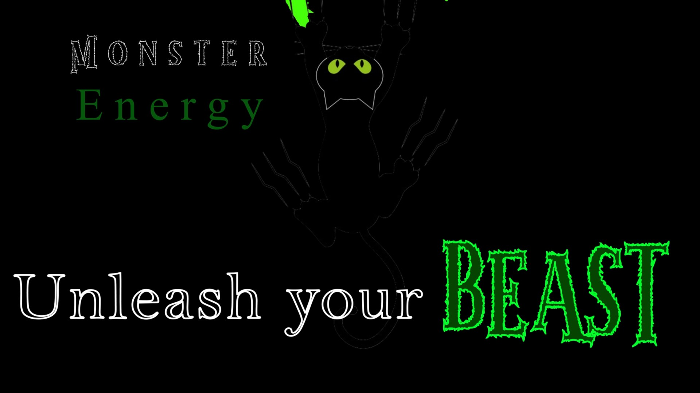
Click the image to read more about this project
Immersive Digital Media Student | TUS Limerick
I'm a third-year BSc (Hons) Immersive Digital Media student based in Co. Clare. I build websites, games and VR experiences, and this is a selection of my work.
Short, punchy visuals where type, colour and movement carry the message.
A concept advert for Monster Energy built around the brand's black-and-green identity. A black cat silhouette with glowing green eyes claws its way down the frame, a visual take on the tagline "Unleash your Beast". The title uses contrasting typefaces: a clean outlined serif for "Unleash your" against a jagged, glowing green display face for "BEAST", so the key word hits hardest.
The challenge was keeping the composition simple and high-contrast: one character, one accent colour, and plenty of black space so the eye follows the claws down to the tagline.
↑ Back to galleryPoster and photo-manipulation work: compositing, cut-outs, lighting and type.
A Halloween event poster for a free night at the TUS Students' Union on October 31st. A cluster of glowing jack-o'-lanterns fades into smoky darkness, with the biggest face anchoring the left of the poster. Silver-chrome lettering sits in the dark space on the right so the event name, date and "free" message read clearly against the warm orange glow.
A photo-manipulation on the theme of peace. Two dove silhouettes, one perched and one taking off, are composited over a sunset behind the bow of a moored ship, with a small flock of birds drifting away into the light. The title is split across three colours, white, olive and deep red, so "Harmony" and "Conflict" are visually separated, with "Over" in between.
↑ Back to galleryModelling, texturing, lighting and camera work in Blender.
.png)
A modelled pool table with felt, wooden legs, balls and a cue, set in a stadium-style environment. The scene uses several cameras that cut between angles along the timeline, rendered at 1280×720 and 25 fps over 750 frames (a 30-second animation).
.png)
.png)
Left: blocking out the house and tree in Edit Mode. Right: the shader node setup for the skybox.
A small house with a gravel interior, a tree and a set of modelled apples, built in the Modeling workspace and then textured in Shading. The surrounding environment is an image-textured skybox wired through the material's node tree, and the lighting is organised into its own collection of point lights.
↑ Back to galleryVR interaction prototypes for the Meta Quest 2.
A VR prototype of tennis played against a wall, built for an XR Experience Analysis and Interaction Prototype assessment. The brief was to analyse an existing XR experience, rebuild one of its key interactions, and write up the result. I based mine on Wii Sports Tennis and tested it on a Quest 2. The screenshots below follow the project from research to the current build.
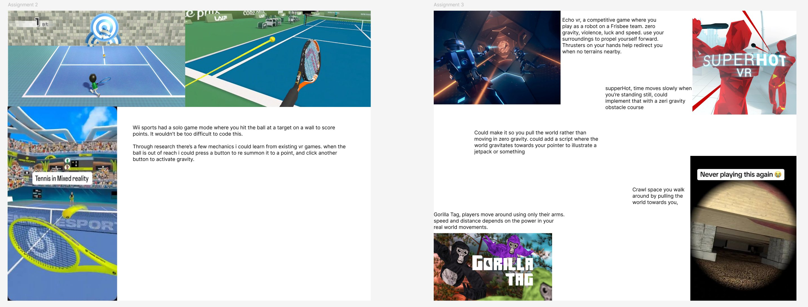
My starting point. The left board collects tennis references: Wii Sports' solo mode where you hit the ball at a target on a wall, plus VR and mixed reality tennis games. It is also where I noted the mechanics worth borrowing, such as pressing a button to re-summon the ball when it rolls out of reach. The right board is research for a separate movement idea, looking at how Echo VR, Superhot VR and Gorilla Tag handle zero gravity and arm-driven movement.
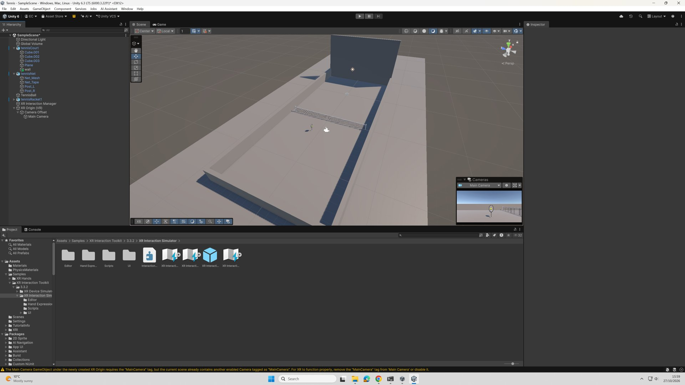
The first greybox. The court is a handful of cubes and a plane with a tall wall at the far end to hit against, a net across the middle, and the ball, racket and XR Origin placed in the hierarchy. Nothing is textured yet. The aim at this stage was only to get the scale and distances feeling right from the player's position.
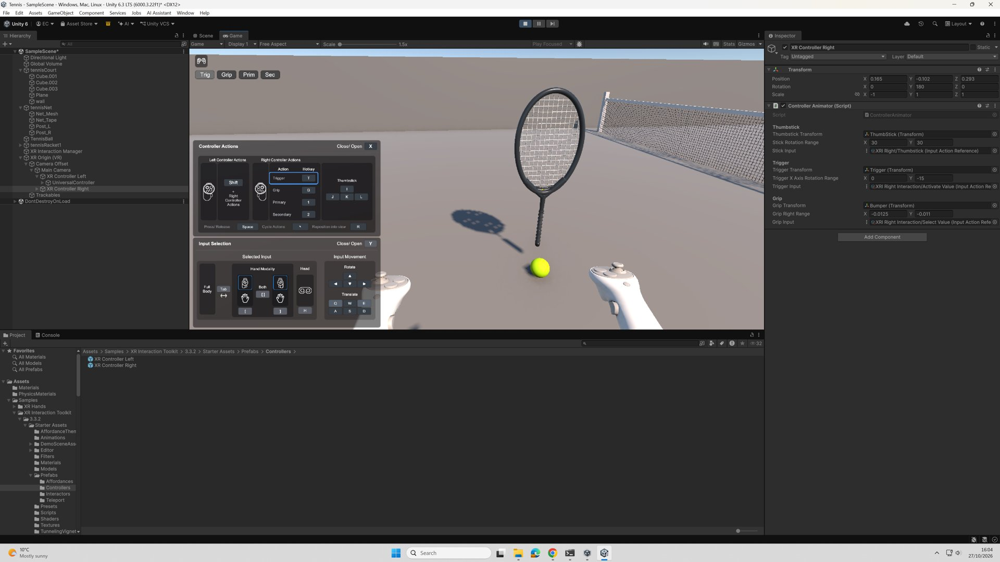
Play mode running through the XR Interaction Simulator, which lets me drive the headset and both controllers from the keyboard and mouse. It meant I could check that the right controller, its trigger and grip inputs, and the racket were all wired up before putting the Quest 2 on, which saves a lot of time on small changes.
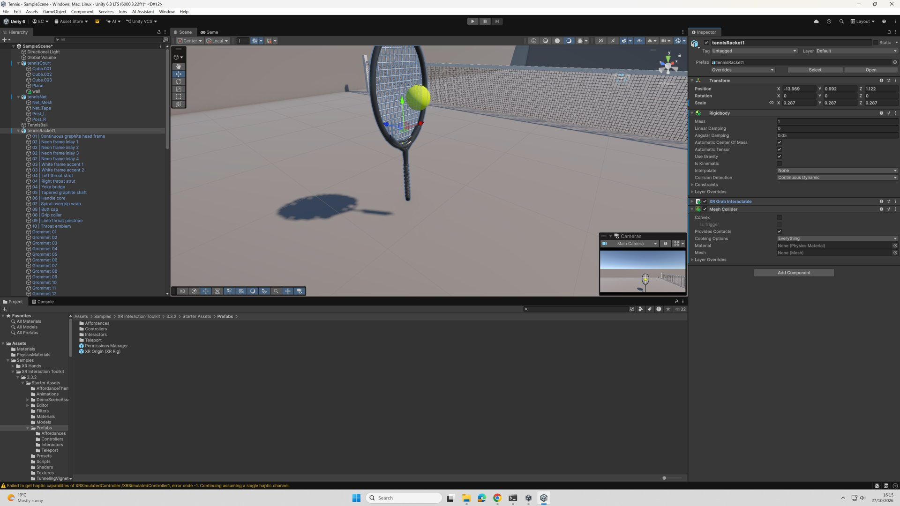
The racket is a detailed model made of many parts (frame inlays, grommets, grip wrap), set up with a Rigidbody, an XR Grab Interactable so it can be picked up, and a Mesh Collider. Collision detection is set to Continuous Dynamic, because a fast swing can otherwise pass straight through the ball between physics frames.
The same court with materials applied: green grass underfoot, brown walls and a meshed net. It is a small change technically, but it makes the space far easier to read in the headset, since the ball now stands out against the surfaces and the wall is clearly the target.
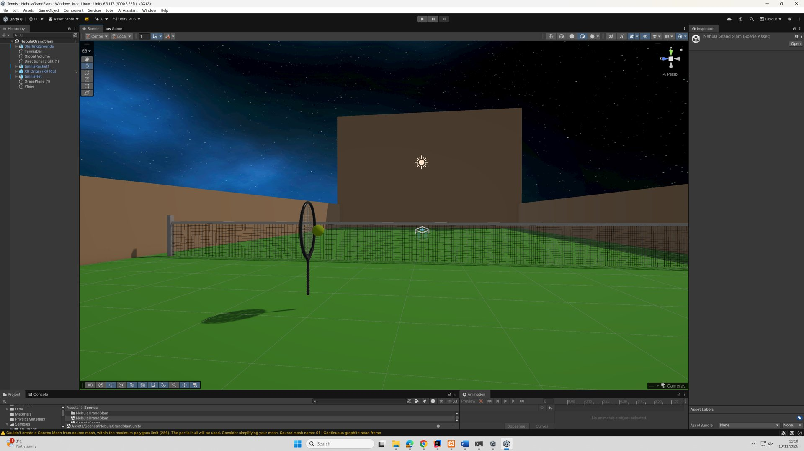
A new scene that reuses the court as a prefab and swaps the plain sky for a space skybox. I wanted the prototype to have more of an identity than a grey practice court, and the dark background also makes the bright ball easier to track.
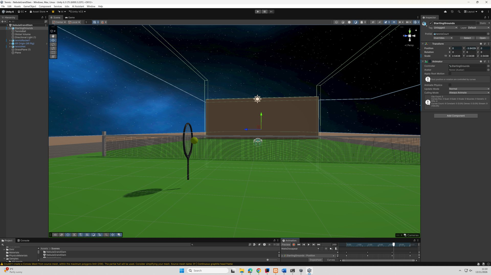
Here the starting court is selected with an Animator attached, and the Animation window shows a clip called WallsDissapear with keyframes on its position. The white outline above the court is the selected object partway through the clip while I scrub the timeline.
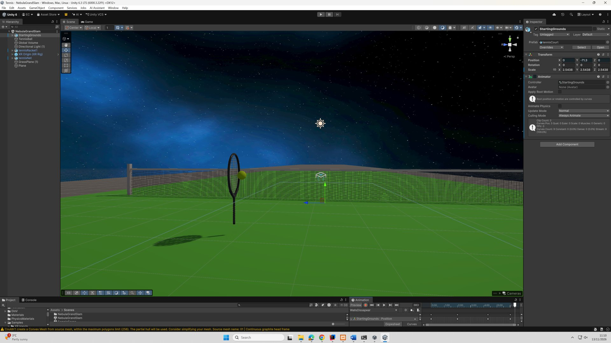
The end of the same clip. The practice walls have dropped out of view. The idea is that the player is to compete in a low gravity obstacle tournament. Its focused more on fun than anything else.
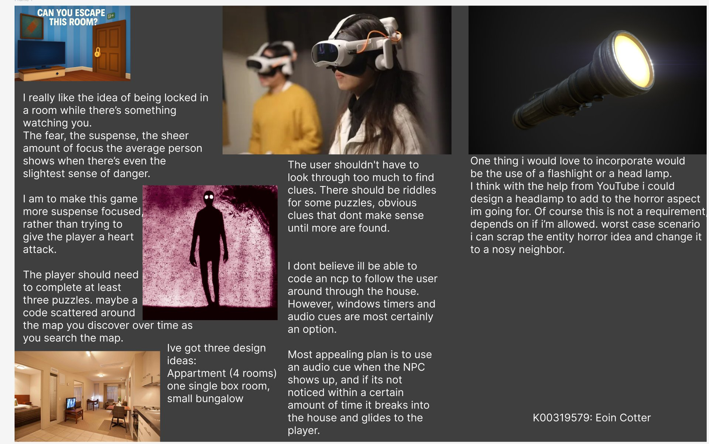
The planning board for a suspense-focused VR escape room: you are locked in a room while something watches you. The player has to solve at least three puzzles, with riddles and code fragments scattered around the map, and clues that should not take too much searching to find. I was realistic about scope here. Instead of coding an NPC that follows the player through the house, the plan uses windows, timers and audio cues: a sound plays when the figure appears, and if the player misses it for too long it breaks in. I also noted three layout options (a four-room apartment, a single box room or a small bungalow) and a flashlight or headlamp as a stretch goal.
A practical project comparing different ways of interacting in VR: ray interaction, direct grab and gaze-plus-pinch. Each technique is a variant launched from a single main menu, built with Unity 6 and XR Interaction Toolkit 3.x so they can be tried and compared side by side.
A story-driven game about a lost cat crossing dangerous terrain and cities, avoiding people who appear as monsters, with the goal of getting back to its family. I'm developing a 2D walk-cycle animation for the cat as part of it. This is a project i am working on alone and for fun.
↑ Back to galleryJava desktop apps and full-stack web projects.
Entering an amount, then converting dollars to euro and euro to dollars.
A desktop calculator-style converter built in IntelliJ IDEA with a Swing GUI. You tap an amount on the on-screen keypad (digits, decimal point and Clear), then press Dollar to Euro or Euro to Dollar to see the converted value in the display. The layout was designed with IntelliJ's GUI form designer and the button logic is written in Java.
A small Bootstrap page built for a Games Fleadh project, presenting three games I would recommend.
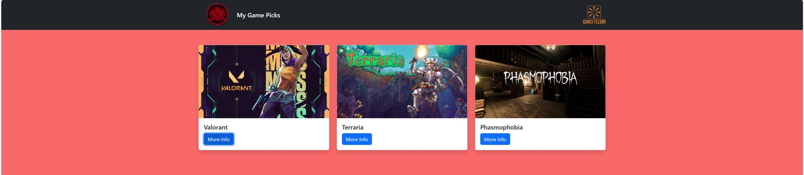
A dark navbar with my logo on one side and the Games Fleadh logo on the other, above a row of three Bootstrap cards for Valorant, Terraria and Phasmophobia. Each card has the game's artwork, its name and a More Info button, and the row is centred so it reflows on smaller screens.
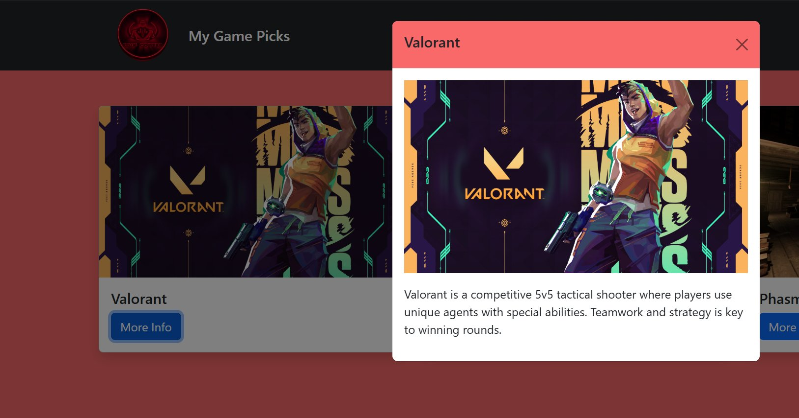
Pressing More Info opens a Bootstrap modal over the page instead of navigating away. The modal header picks up the page's coral colour, and the body shows a larger version of the artwork with a short description of the game underneath.
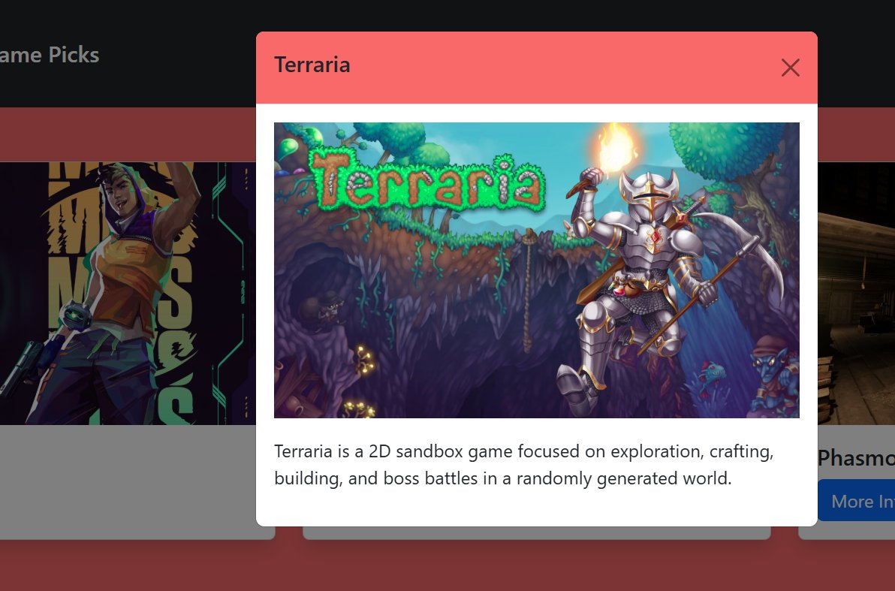
The same modal pattern reused for Terraria. Every game follows one card-plus-modal structure, so adding another pick is a matter of copying a block and changing the image, title and text.
The design stage of a front-end development project: an esports news site planned from user research through wireframes to a high-fidelity prototype.
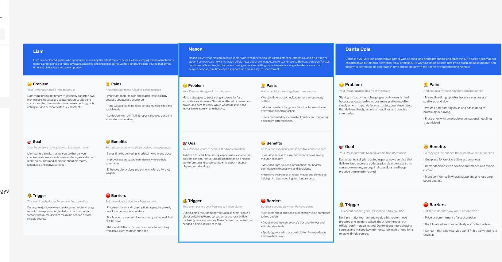
Three personas, Liam, Mason and Dante Cole, each a competitive gamer who follows esports closely. All three share one core problem: news is scattered across sites and social feeds, slow to be confirmed and often biased. Laying out each persona's pains, goals, triggers and barriers gave the site its purpose, which is to be a single trusted source that is quick to scan.
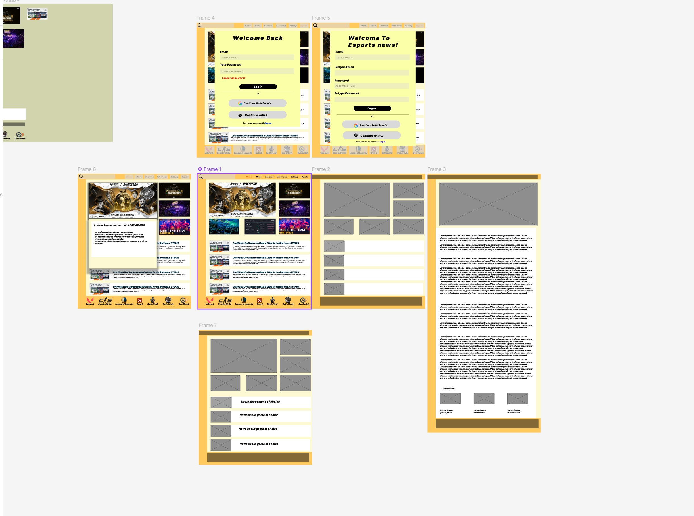
The Figma canvas for the whole site. Grey-box wireframes set the layout first: a large hero story, a column of smaller stories, a list of news by game and a long article page. The finished frames then apply the yellow-and-cream palette and real imagery. The canvas also includes log-in and sign-up overlays with email fields and Continue with Google and X options.
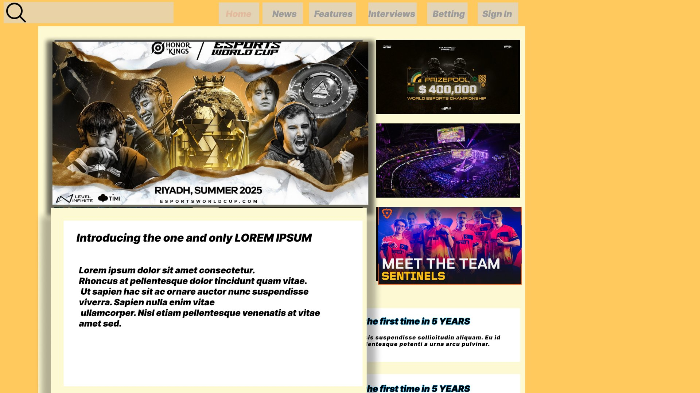
The homepage in the prototype. A search bar and navigation (Home, News, Features, Interviews, Betting, Sign In) run across the top, with the lead story as a large hero image and three smaller stories stacked beside it. Hovering the hero opens a card with the headline and summary, which keeps the page image-led while still letting readers preview a story before clicking through.
In development as a part of my end of semester project.
A Spring Boot web app for showing off creative work. Users can add, edit and delete showcases and the projects inside each one, backed by a database. The front end was restyled to match the gallery-style homepage from my course.
Written by hand in HTML, CSS and JavaScript. The gallery swaps images and scrolls to each write-up, and the navbar scrolls smoothly between sections.
↑ Back to gallery